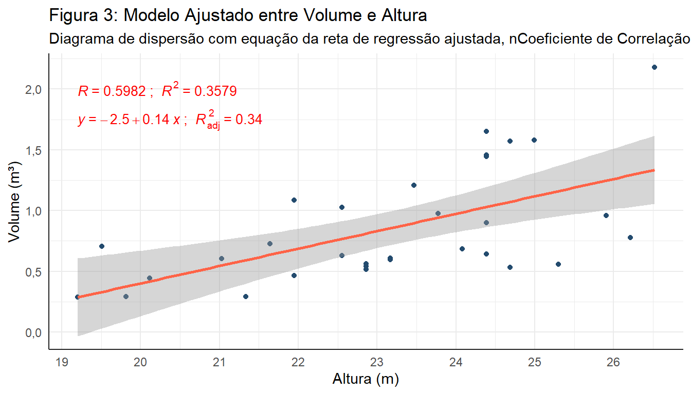

#| echo: false
#| warning: false
## DADOS 1 ----
dados1 <- datasets::trees
dados1 <- dados1|>
janitor::clean_names()
## Conversão de unidades
dados1 <- dados1|>
mutate(
height = height*0.3048,
volume = volume*0.02831685,
girth = girth*0.3048)LAB 5
Introdução
O laboratório desta semana está subdividido em duas partes com análises de dois conjuntos de dados distintos que visa a continuidade da aplicação das técnicas de Regressão Linear Simples com a aplicabilidade das técnicas de análise de resíduos e transformação de variáveis inclusive.
Para melhor desenvolvimento do processo de analise, este relatório foi dividido em duas partes contendo as análises de cada um dos conjuntos de dados e contando com suas respectivas apresentações sobre o contexto a ser analisado.
Metodologia
O primeiro conjunto de dados a ser analisado é denominado trees, disponível no pacote datasets, contém informações de 31 cerejeiras (Black cherry) da Floresta Nacional de Allegheny, relativas a três características numéricas contínuas:
- Volume de madeira útil (em metros cúbicos (m³));
- Altura (em metros (m));
- Circunferência (em metros(m)) a 1,37 de altura.
Para esta atividade serão considerados apenas as informações referentes ao volume e altura das árvores. Com base nestes dados se desenvolverá:
- Ajuste de modelo linear simples para volume como função da altura da árvore;
- Avalação gráfica dos resíduos Jacknife para diagnóstico do modelo ajustado;
- Transformações da característrica utilizada como variável resposta do modelo;
- Avaliação da transformação mais apropriada dentro da família proposta por Box e Cox;
- Indicação da melhor transformação analisada.
Resultados
Análise Descritiva
De modo a conhecer melhor o banco de dados analisado é importante realizar uma análise descritiva das variáveis que o compõem. Na Tabela 1 pode se ver as medidas de resumo de posição e de tendência central destas variáveis.
| Mín | Q1 | Med | Média | Q3 | Máx | Desv.padrão | CV | Assimetria | Curtose | |
|---|---|---|---|---|---|---|---|---|---|---|
| Altura | 19,20 | 21,95 | 23,16 | 23,16 | 24,38 | 26,52 | 1,94 | 0,08 | -0,36 | -0,72 |
| Curcunferência | 2,53 | 3,35 | 3,93 | 4,04 | 4,88 | 6,28 | 0,96 | 0,24 | 0,50 | -0,71 |
| Volume | 0,29 | 0,54 | 0,69 | 0,85 | 1,08 | 2,18 | 0,47 | 0,54 | 1,01 | 0,25 |
Para facilitar a compreenção das medidas apresentadas na Tabela 1, a Figura 1 mostra graficamente estas distribuições.
Desta análise inicial, verifica-se que a distribuição das variáveis não apresenta fatores impeditivos da regressão linear a que nos propomos.
Análise de Dados Atípicos
Pode-se realizar a análise de disperção dos dados por meio de gráficos do tipo BoxPlot, como se vê na Figura 2.
#| echo: false
#| warning: false
#| fig-height: 3
#| fig-width: 7
# BoxPlot ----
{
## b1 volume ----
b1 <- dados1|>
ggplot(aes(y = volume)) +
geom_boxplot(col="darkblue", fill="skyblue", alpha = 0.5)+
labs(
title = "Volume",
x = "",
y = "Metros Cúbicos"
)+theme_minimal(base_size = 7.5)
## b2 altura ----
b2 <- dados1|>
ggplot(aes(y = height)) +
geom_boxplot(col="darkblue", fill="skyblue", alpha = 0.5)+
labs(
title = "Altura",
x = "",
y = "Metros"
)+theme_minimal(base_size = 7.5)
## b3 Circunferência ----
b3 <- dados1|>
ggplot(aes(y = girth)) +
geom_boxplot(col="darkblue", fill="skyblue", alpha = 0.5)+
labs(
title = "Circunferência",
x = "",
y = "Metros"
) +
scale_y_continuous(
labels = scales::number_format(
dig.mark = ".",
decimal.mark = ",")
)+theme_minimal(base_size = 7.5)
b1 + b2 + b3 +
plot_layout(ncol = 3) +
plot_annotation(
title = "Figura 2: BoxPlot das variáveis em análise.") &
# # theme = theme_minimal(plot.title = element_text(size = 10)),
# tag_levels = c("A", "1"), tag_prefix = "Sub Fig. ", tag_sep = ".",
# tag_suffix = ":") &
theme(
plot.tag.position = c(0, 1),
plot.tag = element_text(size = 5.5, hjust = 0, vjust = -0.4))
}
Pode-se verificar pela Figura 2 que há apenas um valor atipico (outlayers), correspodendo a um valor de Volume bem acima dos demais. Por se tratar de apenas um valor e considerando o reduzido número de observasções do banco de dados, decidiu-se por não realizar qualquer tratamento para essa observação.
Ajuste do Modelo
#| echo: false
#| warning: false
#| fig-height: 4
#| fig-width: 7
### Ajuste do Modelo + Gráfico ----
dados1|>
ggplot(aes(x = height, y = volume)) +
geom_point(color = "#234B6E")+
labs(
title = "Figura 3: Modelo Ajustado entre Volume e Altura",
subtitle = "Diagrama de dispersão com equação da reta de regressão ajustada, nCoeficiente de Correlação de Pearson, Coeficiente de Determinação, Coeficiente de nDeterminação Ajustado, Reta de Regressão e Intervalo de Confiança",
y = 'Volume (m³)', x = 'Altura (m)')+
ggpubr::stat_cor(
aes(label = paste(..r.label.., ..rr.label.., sep = "~`; `~")),
cor.coef.name = c("R"),
label.sep = "; ", geom = "text",
color="red", method = "pearson",
label.x = 19.2, label.y = 2, show.legend = F,
p.accuracy = 0.001, r.accuracy = 0.0001,
size = 3.5)+
ggpubr::stat_regline_equation(
aes(label = paste(..eq.label.., ..adj.rr.label.., sep = "~`; `~")),
geom = "text", label.x = 19.2, label.y = 1.75,
position = "identity", color="red", size = 3.5, show.legend = F)+
geom_smooth(
method=lm, se=T, formula = "y ~ x", color = "tomato")+
theme_minimal()+
scale_x_continuous(breaks = seq(19,27,1))+
scale_y_continuous(
breaks = seq(0, 2.5, 0.5),
labels = scales::number_format(
big.mark = ".",
decimal.mark = ","))+
theme(legend.position = "none",
axis.line = element_line(size = 0.5, color = "#222222"))Warning: The `size` argument of `element_line()` is deprecated as of ggplot2 3.4.0.
ℹ Please use the `linewidth` argument instead.
## Modelo Ajustado
mFit1 <- lm(volume~height, data = dados1)Com base na Figura 3 é possível sugerir uma relação positiva entre as variáveis Volume e Altura, fato confirmado pelo Coeficiente de Correlação de Pearson (R = 0,598) que após o teste de hipótese para avaliar a significância da correlação estimada, demonstrou possuir correlação não nula. A reta de regressão ajustada segue a seguinte equação:
\[ \hat{Y}_i = -2,5 + 0,14X_i\]
A Tabela 2 traz os resultados do teste de hipóteses para correlação e o Intervalo de Confiança para o verdadeiro valor da correlação, podendo concluir, com base no p-valor menor que o nível de significância (\(alpha = 5%\)), que a hipótese nula (\(H_0\)) foi rejeitada, assumindo-se a hipótese alternativa (\(H_1\)) que afirma que \(\rho \neq 0\).
| t | p-valor | LI | LS | |
|---|---|---|---|---|
| Altura | 4,02051 | 0,00038 | 0,30952 | 0,78598 |
| Nota: Teste realizado com 5% de significância |
O Coeficiente de Determinação (\(R^2\)) apresenta um valor baixo, podendo afirmar que apenas aproximadamente 36% da variabilidade dos dados está sendo explicada pelo modelo de regressão calculado.
Significância do Modelo
Após o ajuste do modelo existe a necessidade de se avaliar a significância do mesmo, o teste de hipótese para tal situação será realizado, contendo as seguintes hipóteses:
\[H_0: \hat{\beta_1} = 0\]
\[H_1: \hat{\beta_1} \neq 0.\]
As Tabelas 3 e 4 trazem os principais resultados da tabela ANOVA e do Intervalo de Confiança para os parâmetros, possibilitando assim inferir sobre o modelo ajustado.
| $GL^1$ | Soma de Quadrados | Quadrado Médio | Estatística F-Snedecor | p-valor | |
|---|---|---|---|---|---|
| Regressão | 1 | 2,326 | 2,326 | 16,1645 | 0,0004 |
| Resíduos | 29 | 4,174 | 0,144 | ||
| Legenda: | |||||
| 1 GL: Graus de Liberdade |
Intervalos de Confiança para os parâmetros estimados no MRLS.
$LI^1$
$LS^2$
$hat beta_0$
-4,162
-0,772
$hat beta_1$
0,070
0,216
* Nível de Significância de 5%.
Legenda:
1 LI: Limite Inferior (2,5%)
2 LS: Limite Superior (97,5%)
Com base na Tabela 4, avaliando o p-valor é possível afirmar que o modelo é significante rejeitando assim \(H_0\) que tem como pressuposto \(\hat{\beta_1} = 0\).
Através dos Intervalos de Confiança calculados (Tabela 3) é possível afirmar com 95% de confiança que o verdadeiro valor de \(\beta_0\) está entre (-4,1624; -0,7717) e que o verdadeiro valor de \(\beta_1\) está entre (0,0704; 0,2163).
Análise de Resíduos
#| echo: false
#| warning: false
#| fig-width: 7
#| fig-height: 6
mFit1_resid <- broom::augment(mFit1)
#### Gráfico de Resíduos contra Valor Médio
d1 <- mFit1_resid|>
ggplot(aes(x = .fitted, y = rstudent(mFit1))) +
geom_point(color = "#234B6E") +
geom_hline(aes(yintercept = 0), col="tomato")+
labs(
x = "Valores Ajustados",
y = "Resíduos Estudentizados",
title = "Resíduos Estudentizados vs. nValores Ajustados")+
scale_x_continuous(
labels = scales::number_format(
big.mark = ".", decimal.mark = ","))+
scale_y_continuous(
breaks = seq(from = -3, to = 4, by = 1),
labels = scales::number_format(
big.mark = ".", decimal.mark = ","))+
theme_minimal()+
theme(
legend.position = "none",
plot.title = element_text(size = 11, face = "plain"),
axis.title = element_text(size = 8, face = "plain"),
axis.line = element_line(size = 0.5, color = "#222222"))
#### Gráfico de normalidade dos resíduos
d2 <- mFit1_resid %>%
ggplot(aes(sample = .std.resid)) +
qqplotr::stat_qq_band(alpha = 0.3) +
qqplotr::stat_qq_point(color = "#234B6E") +
qqplotr::stat_qq_line(linetype = 2, size = 0.2) +
labs(
x = "Quantil Teórico",
y = "Quantil Amostral",
title = "Gráfico quantil-quantil normal"
)+
scale_x_continuous(breaks = seq(-3,3,1))+
scale_x_continuous(
labels = scales::number_format(
big.mark = ".", decimal.mark = ","))+
scale_y_continuous(
labels = scales::number_format(
big.mark = ".", decimal.mark = ","))+
theme_minimal()+
theme(
legend.position = "none",
plot.title = element_text(size = 11, face = "plain"),
axis.title = element_text(size = 8, face = "plain"),
axis.line = element_line(size = 0.5, color = "#222222"))Warning: Using `size` aesthetic for lines was deprecated in ggplot2 3.4.0.
ℹ Please use `linewidth` instead.Scale for x is already present.
Adding another scale for x, which will replace the existing scale.#### Gráfico Homogeneidade de Variâncias (Locação-Escala) ----
d3 <- mFit1_resid %>%
ggplot(aes(x = .fitted, y = sqrt(abs(.std.resid)))) +
geom_point(color = "#234B6E") +
geom_smooth(
se = T, color = "tomato", method = 'loess', formula = 'y ~ x')+
labs(
x = "Valores Ajustados",
y = expression(sqrt("|Resíduos Padronizados|")),
title = "Homogeneidade de Variâncias n(Locação-Escala)")+
scale_x_continuous(
labels = scales::number_format(
big.mark = ".", decimal.mark = ","))+
scale_y_continuous(
labels = scales::number_format(
big.mark = ".", decimal.mark = ","))+
theme_minimal()+
theme(
legend.position = "none",
plot.title = element_text(size = 11, face = "plain"),
axis.title = element_text(size = 8, face = "plain"),
axis.line = element_line(size = 0.5, color = "#222222"))
d1 + d2 + d3 +
plot_layout(ncol = 2) +
plot_annotation(
title = "Figura 4: Análise de resíduos do modelo ajustado",
tag_levels = c("A", "1"), tag_prefix = "Sub Fig. ",
tag_sep = ".", tag_suffix = ":") &
theme(
legend.position = "none",
plot.tag.position = c(0, 1),
plot.tag = element_text(size = 6, hjust = 0, vjust = -0.4)
)
#| echo: false
#| warning: false
#| fig-width: 7
#| fig-height: 4
# mFit1_resid <- broom::augment(mFit1)
#
# mFit1_resid %>%
# ggplot(aes(x = .fitted, y = rstudent(mFit1))) +
# geom_point(color = "#234B6E") +
# geom_hline(aes(yintercept = 0), col="tomato")+
# labs(
# x = "Valores Ajustado",
# y = "Resíduos Estudentizados",
# title = "Resíduos Estudentizados vs. Valores Ajustados")+
# scale_x_continuous(
# labels = scales::number_format(
# big.mark = ".", decimal.mark = ","))+
# scale_y_continuous(
# breaks = seq(from = -3, to = 4, by = 1),
# labels = scales::number_format(
# big.mark = ".", decimal.mark = ","))+
# theme_minimal()+
# theme(
# legend.position = "none",
# plot.title = element_text(size = 11, face = "plain"),
# axis.title = element_text(size = 8, face = "plain"),
# axis.line = element_line(size = 0.5, color = "#222222"))A Figura 4 Sub.Fig A apresenta um comportamento assimétrico dos resíduos, podendo ser constatado uma pequena variabilidade inicial e um aumento desta à medida que os valores ajustados aumentam, caracterizando uma heterocedasticidade. A Sub.Fig C, que trada da Homogeneidade de Variâncias (Locação-Escala) ressalta que há um problema na variabilidade dos dados, corroborando com a interpretação feita na análise da Sub.Fig. A, de que há uma mudança na variabilidade dos dados, caracterizando Heterocedasticidade dos dados.
A Sub.Fig. B que traz o gráfico para avaliação da normalidade dos dados, mostra que apesar dos dados não estarem precisamente sobre a reta de referência, os mesmos estão contidos na região pertencente ao Intervalo de Confiança - IC, podendo assumir que há normalidade, contudo tal avaliação será confirmada após os Testes de Diagnóstico.
Testes de Diagnósticos do Modelo
Para avaliar se o modelo atende aos pressupostos, além da análise gráfica podem ser realizados testes de diagnósticos, que são testes de hipóteses para avaliação dos pressupostos que são:
- Normalidade;
\(H_0:\) Os resíduos possuem normalidade.
\(H_1:\) Os resíduos não possuem normalidade.
- Homoscedasticidade (Homogeneidade de Variância);
\(H_0:\) Os resíduos possuem variância constante.
\(H_1:\) Os resíduos não possuem variância constante.
Linearidade;
Independência.
\(H_0\): Existe correlação serial entre os resíduos.
\(H_1\): Não existe correlação serial entre os resíduos.
Para tanto serão utilizados os seguintes testes:
Shapiro-Wilk, para avaliar a Normalidade;
Breush-Pagan, para avaliar a Homoscedasticidade;
Durbin-Watson, para avaliar a Independência.
#| echo: false
#| warning: false
res1 <- residuals(mFit1)
##### Teste de normalidade dos resíduos ----
#H0: normalidade
#H1: não normalidade
# SW*
t_sw <- shapiro.test(res1)
##### Teste de homoscedasticidade dos resíduos ----
#H0: resíduos homoscedásticos - Variância constante
#H1: resíduos heteroscedásticos - Variância NÃO constante
# BP*
t_bp <- lmtest::bptest(mFit1, studentize = F)
# Teste deF para linearidade
# Teste de correlação serial lag 1 (Independência dos erros)
#H0: correlacionados - existe correlação serial
#H1: não correlacionados - não existe correlação serial ///ficou confuso no vídeo as hipoteses///
# DW
t_dw <- lmtest::dwtest(mFit1)
resultados <- round(rbind(
t_sw$statistic,
t_bp$statistic,
t_dw$statistic),4)
aux <- rbind(
round(t_sw$p.value,4),
round(t_bp$p.value,4),
"<0,0001")
resultados <- cbind(resultados, aux)
rownames(resultados) <- c("Shapiro-Wilk", "Breush-Pagan", "Durbin-Watson")
colnames(resultados) <- c("Estatística de teste", "p-valor")
resultados|>
kbl(
caption = "Testes de Diagnósticos dos Resíduos",
digits = 5,
format.args=list(big.mark=".", decimal.mark=","),
align = "c", row.names = T, booktabs = T
)|>
kable_styling(
full_width = F, position = 'center',
latex_options = c("striped", "HOLD_position", "repeat_header")
)|>
column_spec(1, bold = T)|>
kable_material()| Estatística de teste | p-valor | |
|---|---|---|
| Shapiro-Wilk | 0.9508 | 0.164 |
| Breush-Pagan | 7.4901 | 0.0062 |
| Durbin-Watson | 0.5009 | <0,0001 |
A Tabela 5 traz os testes de diagnósticos realizados para avaliar o modelo de regressão ajustado, conforme análise gráfica dos resíduos há a confirmação da heterocedasticidade de variância conforme o p-valor obtido pelo teste de Breush-Pagan (0,006) bem como a dependência entre as características confirmado pelo p-valor do teste de Durbin-Watson (<0,0001), em ambos os testes a hipótese nula (\(H_0\)) foi rejeitada com base p-valor, como tentativa de contornar a quebra dos pressupostos se faz necessária a transformação da variável resposta.
Transformações dos Dados
Para esta análise a característica em estudo (Volume) será muitas vezes representada pela letra Y para melhor representação.
#| echo: false
#| warning: false
t1 <- dados1|>
mutate(volume = sqrt(volume))
t2 <- dados1|>
mutate(volume = log(volume))
t3 <- dados1|>
mutate(volume = volume^2)
mFitT1 <- lm(volume~height, data = t1)
mFitT2 <- lm(volume~height, data = t2)
mFitT3 <- lm(volume~height, data = t3)Tendo em vista que o modelo não atendeu aos pressupostos se faz necessário a utilização de técnicas para buscar uma melhora de performace do modelo antes da possibilidade de descarte e para tanto algumas transformações são sugeridas, sendo estas:
\(T_1 = sqrt{Y}\);
\(T_2 = log(Y)\);
\(T_3 = Y^2\).
Sendo Y a variável resposta do modelo representada pelo Volume.
#| echo: false
#| warning: false
## Transformações ----
t1 <- dados1|>
mutate(volume = sqrt(volume))
t2 <- dados1|>
mutate(volume = log(volume))
t3 <- dados1|>
mutate(volume = volume^2)
### Medidas Resumo ----
resultados <- cbind(dados1$volume, t1$volume, t2$volume, t3$volume)
colnames(resultados) <- c("1. Volume", "2. √Volume", "3. log(Volume)", "4. Volume²")
resultados |>
summarytools::descr(
stats = c("min", "q1", "med", "mean","q3", "max", "sd", "cv"),
justify = "c",
style = "rmarkdown",
transpose = T
)|>
kbl(
caption = "Medidas Resumo da característica Volume com e sem transformações.",
digits = 3,
format.args=list(big.mark=".", decimal.mark=","),
align = "c",
row.names = T,
booktabs = T
)|>
kable_styling(
full_width = F,
position = 'center',
latex_options = c("striped", "HOLD_position", "scale_down")
)|>
column_spec(1, bold = T)|>
kable_material()| Mín | Q1 | Med | Média | Q3 | Máx | Desv.padrão | CV | |
|---|---|---|---|---|---|---|---|---|
| 1. Volume | 0,289 | 0,541 | 0,685 | 0,854 | 1,085 | 2,180 | 0,465 | 0,545 |
| 2. √Volume | 0,537 | 0,735 | 0,828 | 0,894 | 1,041 | 1,477 | 0,239 | 0,267 |
| 3. log(Volume) | -1,242 | -0,615 | -0,378 | -0,292 | 0,081 | 0,780 | 0,526 | -1,805 |
| 4. Volume² | 0,083 | 0,293 | 0,470 | 0,940 | 1,176 | 4,754 | 1,051 | 1,119 |
A Tabela 6 traz a sumarização da característica em analise em sua forma natural juntamente com as formas transformadas para tentar identificar o comportamento destas transformações, podendo constatar um aumento na variabilidade dos dados, com base no valor do Coeficiente de Variação, com exceção da variável sob a transformação \(Y^2\). Seguem as equações das retas ajustadas após a transformação.
\[ sqrt{hat{Y_i}} = -0,89 + 0,077X_i\]
\[ log(hat{Y_i}) = -4,4 + 0,18X_i\]
\[ hat{Y_i}^2 = -5,9 + 0,3X_i\]
A Figura 5 traz os diagramas de dispersão com a reta ajustada para o modelo sem transformação e para cada transformação realizada, a fim de possibilitar a identificação das diferenças entre cada modelo.
#| echo: false
#| warning: false
#| fig-width: 7
#| fig-height: 6
d1 <- dados1|>
ggplot(aes(x = height, y = volume)) +
geom_point(
color = "#234B6E"
)+
labs(
title = "Modelo Ajustado entre o Volume e à nAltura",
y = 'Volume (m³)',
x = 'Altura (m)'
)+
ggpubr::stat_cor(
aes(label = paste(..r.label.., ..rr.label.., sep = "~`; `~")),
cor.coef.name = c("R"),
label.sep = "; ", geom = "text",
color="red",
method = "pearson",
label.x = 19.2, label.y = 2, show.legend = F,
p.accuracy = 0.001, r.accuracy = 0.0001,
size = 2.5)+
ggpubr::stat_regline_equation(
aes(label = paste(..eq.label.., ..adj.rr.label.., sep = "~`; `~")),
geom = "text", label.x = 19.2, label.y = 1.75,
position = "identity",
color="red",
size = 2.5, show.legend = F
)+
geom_smooth(
method=lm, se=T, formula = "y ~ x", color = "tomato")+
theme_minimal()+
scale_x_continuous(breaks = seq(19,27,1))+
scale_y_continuous(
breaks = seq(0, 2.5, 0.5),
labels = scales::number_format(
big.mark = ".",
decimal.mark = ","
))+
theme(legend.position = "none",
plot.title = element_text(size = 11, face = "plain"),
axis.title = element_text(size = 8, face = "plain"),
axis.line = element_line(size = 0.5, color = "#222222"))
d2 <- t1|>
ggplot(aes(x = height, y = volume)) +
geom_point(
color = "#234B6E"
)+
labs(
title = "Modelo Ajustado entre a raiz[Volume (m³)] ne à Altura",
y = expression(sqrt('Volume (m³)')),
x = 'Altura (m)'
)+
ggpubr::stat_cor(
aes(label = paste(..r.label.., ..rr.label.., sep = "~`; `~")),
cor.coef.name = c("R"),
label.sep = "; ", geom = "text",
color="red",
method = "pearson",
label.x = 19.2, label.y = 1.375, show.legend = F,
p.accuracy = 0.001, r.accuracy = 0.0001,
size = 2.5)+
ggpubr::stat_regline_equation(
aes(label = paste(..eq.label.., ..adj.rr.label.., sep = "~`; `~")),
geom = "text", label.x = 19.2, label.y = 1.25,
position = "identity",
color="red",
size = 2.5, show.legend = F
)+
geom_smooth(
method=lm, se=T, formula = "y ~ x", color = "tomato")+
theme_minimal()+
scale_x_continuous(breaks = seq(19,27,1))+
scale_y_continuous(
breaks = seq(0, 1.5, 0.25),
labels = scales::number_format(
big.mark = ".",
decimal.mark = ","
))+
theme(legend.position = "none",
plot.title = element_text(size = 11, face = "plain"),
axis.title = element_text(size = 8, face = "plain"),
axis.line = element_line(size = 0.5, color = "#222222"))
d3 <- t2|>
ggplot(aes(x = height, y = volume)) +
geom_point(
color = "#234B6E"
)+
labs(
title = "Modelo Ajustado entre o log[Volume (m³)] ne à Altura",
y = expression(log('Volume (m³)')),
x = 'Altura (m)'
)+
ggpubr::stat_cor(
aes(label = paste(..r.label.., ..rr.label.., sep = "~`; `~")),
cor.coef.name = c("R"),
label.sep = "; ", geom = "text",
color="red",
method = "pearson",
label.x = 19.2, label.y = 0.7, show.legend = F,
p.accuracy = 0.001, r.accuracy = 0.0001,
size = 2.5)+
ggpubr::stat_regline_equation(
aes(label = paste(..eq.label.., ..adj.rr.label.., sep = "~`; `~")),
geom = "text", label.x = 19.2, label.y = 0.5,
position = "identity",
color="red",
size = 2.5, show.legend = F
)+
geom_smooth(
method=lm, se=T, formula = "y ~ x", color = "tomato")+
theme_minimal()+
scale_x_continuous(breaks = seq(19,27,1))+
scale_y_continuous(
breaks = seq(-1.3, 0.8, 0.3),
labels = scales::number_format(
big.mark = ".",
decimal.mark = ","
))+
theme(legend.position = "none",
plot.title = element_text(size = 11, face = "plain"),
axis.title = element_text(size = 8, face = "plain"),
axis.line = element_line(size = 0.5, color = "#222222"))
d4 <- t3|>
ggplot(aes(x = height, y = volume)) +
geom_point(
color = "#234B6E"
)+
labs(
title = "Modelo Ajustado entre o [Volume (m³)]² ne à Altura",
y = '[Volume (m³)]²',
x = 'Altura (m)'
)+
ggpubr::stat_cor(
aes(label = paste(..r.label.., ..rr.label.., sep = "~`; `~")),
cor.coef.name = c("R"),
label.sep = "; ", geom = "text",
color="red",
method = "pearson",
label.x = 19.2, label.y = 4.5, show.legend = F,
p.accuracy = 0.001, r.accuracy = 0.0001,
size = 2.5)+
ggpubr::stat_regline_equation(
aes(label = paste(..eq.label.., ..adj.rr.label.., sep = "~`; `~")),
geom = "text", label.x = 19.2, label.y = 4,
position = "identity",
color="red",
size = 2.5, show.legend = F
)+
geom_smooth(
method=lm, se=T, formula = "y ~ x", color = "tomato")+
theme_minimal()+
scale_x_continuous(breaks = seq(19,27,1))+
scale_y_continuous(
breaks = seq(-0.5, 5, 0.75),
labels = scales::number_format(
big.mark = ".",
decimal.mark = ","
))+
theme(legend.position = "none",
plot.title = element_text(size = 11, face = "plain"),
axis.title = element_text(size = 8, face = "plain"),
axis.line = element_line(size = 0.5, color = "#222222"))
d1 + d2 + d3 + d4 +
plot_layout(ncol = 2) +
plot_annotation(
title = "Figura 5: Modelo ajustado e suas transformações",
subtitle = "Comparativo entre o modelo ajustado sem transformação com os modelos após a transformações nda variável resposta.",
tag_levels = c("A", "1"), tag_prefix = "Sub Fig. ",
tag_sep = ".", tag_suffix = ":") &
theme(
legend.position = "none",
plot.tag.position = c(0, 1),
plot.tag = element_text(size = 6, hjust = 0, vjust = -0.4))
#| echo: false
#| warning: false
#| fig-width: 7
#| fig-height: 6
### Residuos ----
mFitT1_resid <- broom::augment(mFitT1)
mFitT2_resid <- broom::augment(mFitT2)
mFitT3_resid <- broom::augment(mFitT3)
d1 <- mFitT1_resid %>%
ggplot(aes(x = .fitted, y = rstudent(mFitT1))) +
geom_point(color = "#234B6E") +
geom_hline(aes(yintercept = 0), col="tomato")+
labs(
x = "Valores Ajustado",
y = "Resíduos Estudentizados",
title = expression(sqrt("Volume (m³)")))+
scale_x_continuous(
labels = scales::number_format(
big.mark = ".", decimal.mark = ","))+
scale_y_continuous(
labels = scales::number_format(
big.mark = ".", decimal.mark = ","))+
theme_minimal()+
theme(
legend.position = "none",
plot.title = element_text(size = 11, face = "plain"),
axis.title = element_text(size = 8, face = "plain"),
axis.line = element_line(size = 0.5, color = "#222222"))
d2 <- mFitT2_resid %>%
ggplot(aes(x = .fitted, y = rstudent(mFitT2))) +
geom_point(color = "#234B6E") +
geom_hline(aes(yintercept = 0), col="tomato")+
labs(
x = "Valores Ajustado",
y = "Resíduos Estudentizados",
title = expression(log("Volume (m³)")))+
scale_x_continuous(
labels = scales::number_format(
big.mark = ".", decimal.mark = ","))+
scale_y_continuous(
labels = scales::number_format(
big.mark = ".", decimal.mark = ","))+
theme_minimal()+
theme(
legend.position = "none",
plot.title = element_text(size = 11, face = "plain"),
axis.title = element_text(size = 8, face = "plain"),
axis.line = element_line(size = 0.5, color = "#222222"))
d3 <- mFitT3_resid %>%
ggplot(aes(x = .fitted, y = rstudent(mFitT3))) +
geom_point(color = "#234B6E") +
geom_hline(aes(yintercept = 0), col="tomato")+
labs(
x = "Valores Ajustado",
y = "Resíduos Estudentizados",
title = "Volume²")+
scale_x_continuous(
labels = scales::number_format(
big.mark = ".", decimal.mark = ","))+
scale_y_continuous(
labels = scales::number_format(
big.mark = ".", decimal.mark = ","))+
theme_minimal()+
theme(
legend.position = "none",
plot.title = element_text(size = 11, face = "plain"),
axis.title = element_text(size = 8, face = "plain"),
axis.line = element_line(size = 0.5, color = "#222222"))
d1 + d2 + d3 +
plot_layout(ncol = 2) +
plot_annotation(
title = "Figura 6: Gráficos dos Resíduos Estudentizados vs. Valores Ajustados ndas características transformadas.",
# subtitle = "Comparativo entre o modelo ajustado sem transformação com os modelos após a transformações da variável resposta",
tag_levels = c("A", "1"), tag_prefix = "Sub Fig. ",
tag_sep = ".", tag_suffix = ":") &
theme(
legend.position = "none",
plot.tag.position = c(0, 1),
plot.tag = element_text(size = 6, hjust = 0, vjust = -0.4))
A Figura 6 traz os gráficos comparativos dos resíduos estudentizados (Jacknife) versus os valores ajustados das variáveis transformadas, sendo possível constatar que houve uma aparente melhora na variabilidade nas Sub.Figs. A e B, contudo houve uma maior evidenciação do ponto atípico na Sub.Fig C, sendo este influente o suficiente para interferir a variabilidade total deste modelo, sendo descartado este modelo transformado pela quebra do pressuposto da homogeneidade de variâncias.
Dentre os modelos sob a transformação \(sqrt{Y}\) e \(log(Y)\), a figura que traz o comparativo dos resíduos sob a transformação \(log(Y)\) (Sub.Fig. B) apresenta uma maior homogeneidade de variância, sendo o modelo mais adequado dentre os modelos transformados.
Como forma de confirmar a avaliação feita sobre a analise gráfica, foi construída a Tabela 6 com os testes de diagnósticos dos resíduos do modelo sob a transformação \(log(Y)\).
#| echo: false
#| warning: false
resT2 <- residuals(mFitT2)
t_sw_t2 <- shapiro.test(resT2)
t_bp_T2 <- lmtest::bptest(mFitT2, studentize = F)
t_dw_T2 <- lmtest::dwtest(mFitT2)
resultados <- round(rbind(
t_sw_t2$statistic,
t_bp_T2$statistic,
t_dw_T2$statistic),4)
aux <- rbind(
round(t_sw_t2$p.value,4),
round(t_bp_T2$p.value,4),
"<0,0001")
resultados <- cbind(resultados, aux)
rownames(resultados) <- c("Shapiro-Wilks", "Breush-Pagan", "Durbin-Watson")
colnames(resultados) <- c("Estatística de teste", "p-valor")
resultados|>
kbl(
caption = "Testes de Diagnósticos dos Resíduos após transformação log(Y)",
digits = 5,
format.args=list(big.mark=".", decimal.mark=","),
align = "c", row.names = T, booktabs = T
)|>
kable_styling(
full_width = F, position = 'center',
latex_options = c("striped", "HOLD_position", "repeat_header")
)|>
column_spec(1, bold = T)|>
kable_material()| Estatística de teste | p-valor | |
|---|---|---|
| Shapiro-Wilks | 0.9131 | 0.0155 |
| Breush-Pagan | 0.4757 | 0.4904 |
| Durbin-Watson | 0.5066 | <0,0001 |
A Tabela 7 traz os testes de diagnóstico para a o modelo após a transformação da variável resposta, sendo possível constatar que após a transformação o novo modelo não rejeita a hipótese nula (\(H_0\)) para o teste de homogeneidade de variância, corroborando com a análise gráfica, contudo, os demais testes não foram bem sucedidos.
Tendo em vista não ser a tarefa mais simples a aplicação de diversas transformações e os devidos testes para avaliar o melhor possível modelo a ser utilizado, que minimize a variância residual, a opção mais adequada é a escolha do modelo baseado na família de transformações de Box-Cox, definida por:
\[Y(lambda) = begin{cases} dfrac{Y^{lambda} - 1}{lambda}, text{ se } lambda neq 0 log(Y), text{ se } lambda = 0 end{cases}\]
sendo \(lambda\) o parâmetro da transformação.
Para tanto a Figura 7 foi construída com base na função de \(lambda\) para a escolha da transformação apropriada.
#| echo: false
#| warning: false
#| fig-width: 7
#| fig-height: 4
par(mfrow = c(1, 1), mar=c(4,4,2,1), oma=c(1.5,1,1.5,1))
bc <- MASS::boxcox(mFit1, lambda = seq(-1, 1, 1/10), ylab = "log-Verossimilhança")
mtext(side = 3, text = "Figura 7: Transformação Box-Cox", outer = T)par(mfrow = c(1, 1), mar=c(5, 4, 4, 2) + 0.1, oma=c(1.5,1,1.5,1))
lambda <- bc$x[which.max(bc$y)]Analisando o gráfico das famílias de transformações Box-Cox é possível identificar que \(-0,5 < lambda_{max} < 0\) (\(lambda_{max}approx\) -0,192), partindo do princípio que o valor zero está incluso no intervalo de valores possíveis de \(lambda\) que minimizam a variância residual, mesmo o zero não sendo o máximo valor assumido, ainda assim, visando a escolha de uma transformação que possibilite uma interpretação facilitada, a escolha da transformação \(log(Y)\) torna-se a escolha mais assertiva, conforme conclusão anteriormente feita baseado na análise gráfica.
Conclusão
Após as análises realizadas sobre modelo ajustado foi possível constatar uma melhora no desempenho do modelo, quanto a variabilidade dos dados, após a transformação da variável resposta para a transformação \(log(Y)\), fato constatado através da Figura 3 por meio do valor do Coeficiente de Determinação \(R^2\) bem como através da análise da Figura 4, por meio dos resíduos.
Apesar de não se ter conseguido um modelo que preenchesse todos os pressupostos, ainda assim, na possibilidade desse modelo ter sido satisfatório, poder-se-ia interpretar a sua utilização da seguinte forma:
Para cada aumento de um metro na altura da árvore, há uma redução média de \(exp(-4,4)\) m³ no volume ou aproximadamente 0,012 m³.
Conclusões
Embora o banco de dados utilizado tenha diversos dados ausentes e use um sistema métrico diverso, o tratamento dos dados permitiu a avaliação da correlação entre as variáveis.
Observou-se que o peso do paciente apenas tem relação significativa com sua razão de colesterol total e colesterol bom e suas medidas de Hemoglobina glicada, entretanto a ponderação do peso por meio do Índice de Massa Corpórea (IMC), deixa claro que apenas a Hemoglobina glicada tem relação com o peso quando se leva em consideração a altura do paciente.
Como um trabalho futuro, pode-se pensar em uma análise envolvendo variáveis resposta menos intuitivas que o peso do paciente ou seu IMC, que tem potencial para revelar outras relações entre as condições clínicas do paciente.